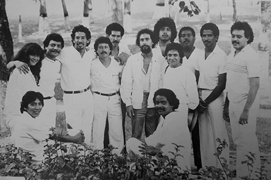
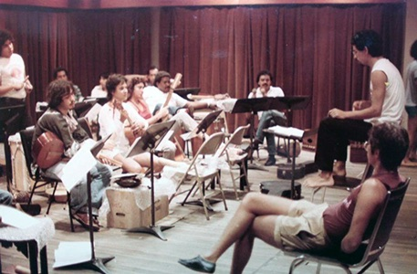

Agrupación creada por Isabel Áretz,
Emilio Mendoza y José Antonio Abreu, para realizar un
concierto dentro de las celebraciones del Bicentenario del
Natalicio de Simón Bolívar, 1983, con los instrumentos de
INIDEF - Instituto Interamericano de Etnomusicología y
Folklore. Ver en detalle la creación de esta orquesta
experimental en el artículo de Mendoza "La Utilización...".
Se desarrollaron presentaciones simultáneamente de música
tradicional latinoamericana y música nueva experimental con
instrumentos afro, indígena y mestizos de Latinoamérica,
primero de la colección INIDEF
y luego propios, bajo los auspicios del CONAC, ONJV, INIDEF
hasta febrero, 1983, luego bajo INIDEF hasta 1984, y luego
autónoma como asociación sin fines de lucro hasta la
actualidad.
 ODILA
antes del viaje al Festival Latinoamericano de las
Artes, San Juan de Puerto Rico, 1984
 Ensayo
en Puerto Rico, 1984, con la presencia de mi hermano
Claudio Mendoza,
quien colaboró intensamente con la coordinación de la
gira.
Integrantes (entre 01-1982 -- 07-1987):
Emilio Mendoza
Dirección,
bandola llanera, guitarra, percusión, voz
Israel Girón
Subdirección,
marimba, percusión, voz
Lizardo Domínguez
Secretario, maracas, percusión
Randy
Arriechi
Cuatro,
voz, percusión
Arturo
García
Arpa Central
Daniel
Gil
Cuatro,
voz, percusión
Alexánder
Paredes
Bandola, cuatro, voz
Yanira Albornoz
Bandola
María
Petit
Cuatro, tiple
José "Chipi" Uzcátegui
Bandola, cuatro
Léster
Paredes
Cuatro, voz, percusión
Orlando
Paredes
Guitarra,
voz, percusión
Aquiles Báez
Cuatro,
percusión
Taumanova Álvarez
Cuatro, percusión, voz
Wladimir "Corroncho"
Percusión
Omar
Oliveros
Congas,
percusión
Rafael
Galindo
Quenas, zampoñas, tarkas
Juan Espinoza
Quenas, zampoñas, tarkas
Domingo
Hernández
Flautas, Quena
Ricardo
Viloria
Flautas, Quena
Carlos
Cruz
Mina,
percusión
Carlos Peña
Mina, tambores
Orlando
Poleo
Congas, percusión
Cristóbal Petit
Congas, percusión
Wladimir
Rivero
Percusión
Argenis Franquis
Arpa
llanera, cuatro
Tundra Rodríguez
Palo de Lluvia
Otros integrantes:
Fernando Alcalá, Javier Aldana, Roberto Chacón, Antonio
Escobar, Germán Machado, Germán Pérez, Víctor Salamanqués,
Jorge Torres, Felipe Acevedo, José Aparicio, Zanice Bello,
Sergio Brisuela, Osmayra Bustos, Jesús Canelón, Mauricio
Castillo, Armando Carballo, Walter Chica, Jorge Guzmán,
Armando Liendo, Joaquín López Mujica, Jimmy Maguida, Feliz
Méndez, Nardy Medina, Fernando Mozo, José Peña, Rafael
Picardos, Luis Quintana, Patricia Reyna, Carlos Ríos,
Marina Romero, Humberto Rodríguez, Carmelo Sánchez,
Germán Camacho, Héctor López, Ivanhoe Prado, Miguel Scala.
Diseño del logo Odila: Benno Richard Mauler
Actividades y
Producción:
Concierto inaugural en la
Sala José Félix Rivas, Teatro Teresa Carreño, en el día de
la juventud el 12 de febrero, 1983, con una sala repleta y
la asistencia del cuerpo ejecutivo nacional con el
Presidente Luis Herrera Campins, ministros, militares,
embajadores, canciller y un gran público, el cual en su
mayoría se quedó afuera. Ver video de la
pieza de Isabel Aretz Chimiterías (transcrita del
original para piano) y al final, Etnocidio de
Emilio Mendoza de ese concierto, dirigida por su autor.
Giras de conciertos por
Venezuela, Canadá, Puerto Rico. Ver EM-CV pag. 26-27 .
Cursos regulares desde
septiembre 1982 hasta julio 1983, de los instrumentos
folklóricos en el Conservatorio de la ONJV en El Paraíso,
y cursos de composición para este tipo de orquesta.
Serie de charlas y
conferencias, tanto nacionales como internacionales, por
Emilio Mendoza. Ver EM-CV
pag. 18-19.
Gran cantidad de
documentación hemerográfica acumulada entre 1982 -1987. Ver EM-CV
pag. 47-49.
Numerosas presentaciones en
vivo en TV Canal 5 y 8, Caracas. Ver EM-CV
pag. 45.
Bosque Rodríguez, Jesús Alberto.
“Orquesta de Instrumentos Latinoamericanos (ODILA) en la
Creación y Difusión de la Música en el Continente desde 1983
hasta 1993." Tesis de grado, Licenciatura en Artes, Mención
Música, Escuela de Artes, Universidad Central de Venezuela,
Caracas. Tutor: Joaquín López Mujica, septiembre, 1994.
L.P.
publicado: Odila - Entre lo
tradicional y lo contemporáneo. (LP 33.3
rpm). Caracas: CCPYT-OAS 88005, 1986. Ejecución de la
ODILA-1983, director E. Mendoza. Incluye la composición Etnocidio y el
arreglo de música africana de Ghana, Cale-Cale:
En julio, 1987, Mendoza renuncia
a su cargo como director para hacer sus estudios de Doctorado
en EUA, e Israel Girón asume su dirección desde ese momento
hasta el presente. La Odila continúa su labor hoy en día bajo
la dirección ejecutiva de Israel Girón, dirección musical de
Jesús Bosque, ubicados primero en la Universidad Bolivariana
de Venezuela y desde 2018 en la Fundación Teatro Teresa
Carreño, Caracas, como grupo estable.